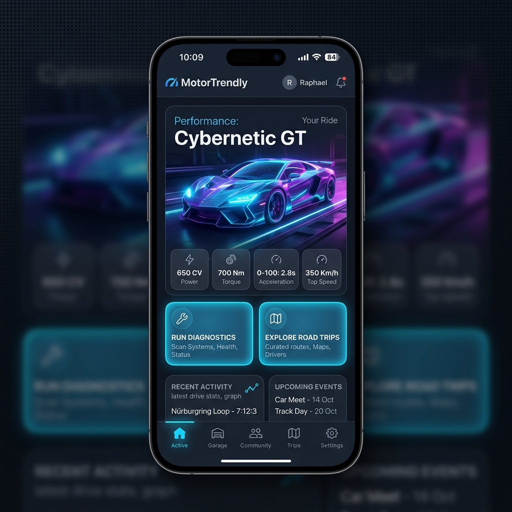

Pronto a salire a bordo?
Scarica MotorTrendly sul tuo dispositivo ed entra a far parte della più grande community di appassionati di auto e moto in Europa. L'app è completamente gratuita.
Unisciti alla community definitiva per auto e moto. Gestisci il tuo garage virtuale, risolvi i problemi meccanici con l'aiuto dell'intelligenza artificiale e pianifica raduni mozzafiato su percorsi panoramici.

Abbiamo raggruppato tutto ciò che serve a chi vive di benzina e asfalto in un'unica interfaccia scura, fluida e reattiva.
Registra auto e moto con schede tecniche avanzate. Traccia modifiche estetiche, aerodinamiche e motoristiche in profili dedicati e condivisibili.
Scansiona i codici errore o descrivi i sintomi. La nostra intelligenza artificiale incrocia i dati con soluzioni reali convalidate da esperti.
Organizza raduni monomarca o aperti a tutti. Traccia percorsi stradali mozzafiato con tappe intermedie e condividili con la carovana in tempo reale.
Che tu sia un purista delle quattro ruote o un centauro della piega, MotorTrendly ti offre un'esperienza personalizzata in base al tuo mezzo di trasporto.
MotorTrendly incrocia i codici errore della tua centralina (tramite OBD2 o ricerca manuale) con la nostra knowledge base per guidarti verso la riparazione esatta.
Non guidare mai da solo. MotorTrendly ti permette di scoprire, partecipare ed organizzare giri di gruppo e incontri motoristici sul territorio.
Scarica MotorTrendly sul tuo dispositivo ed entra a far parte della più grande community di appassionati di auto e moto in Europa. L'app è completamente gratuita.